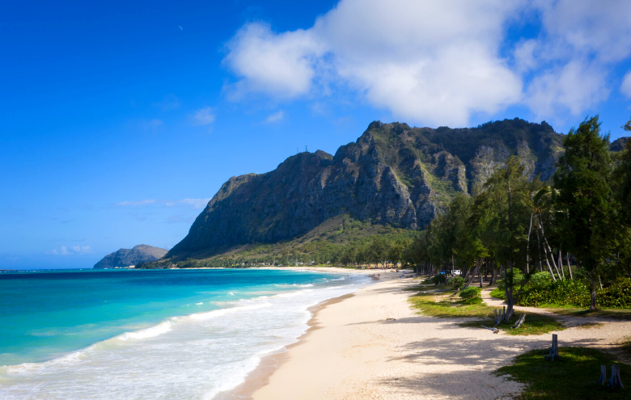

A trip to Hawaii offers an extraordinary blend of natural beauty, outdoor adventure, and deep cultural heritage, making it one of the most diverse travel destinations in the world. Each island provides its own unique experiences, allowing visitors to tailor their trip to relaxation, exploration, or a mix of both. On Oahu, travelers can enjoy the lively energy of Honolulu while relaxing on famous shores like Waikiki Beach, where surfing, sunbathing, and oceanfront dining are part of daily life. For those seeking dramatic scenery, Kauai—often called the “Garden Isle”—features lush rainforests and the breathtaking cliffs of the Na Pali Coast, which can be explored by boat, helicopter, or hiking trails. Meanwhile, Maui offers a balance of luxury and nature, highlighted by the winding Road to Hana, a journey filled with waterfalls, scenic overlooks, and hidden coastal gems.
On the Big Island, visitors encounter some of the most unique landscapes on Earth, including active volcanoes within Hawaii Volcanoes National Park. Here, you can walk across hardened lava fields, witness steam rising from volcanic vents, and learn about the powerful geological forces that continue to shape the islands. Across Hawaii, outdoor activities are nearly endless. Snorkeling and scuba diving reveal vibrant coral reefs and marine life such as sea turtles and tropical fish, while surfers from around the world are drawn to legendary waves, especially on Oahu’s North Shore. Hiking trails lead to cascading waterfalls, volcanic craters, and panoramic coastal views, and in the winter months, visitors may even spot humpback whales migrating through Hawaiian waters. Cultural experiences are equally important, with traditional luaus offering a chance to enjoy local dishes, music, and hula performances that reflect the islands’ Polynesian roots.
Hawaii is also rich in fascinating facts and natural diversity. It is the only U.S. state located entirely in the tropics and the only one composed solely of islands, sitting roughly 2,400 miles from the mainland United States. The island chain was formed over millions of years by volcanic activity from a hotspot beneath the Pacific Plate, resulting in a wide range of landscapes—from black and green sand beaches to dense jungles and high-altitude deserts. Some of the world’s tallest mountains, such as Mauna Kea, are located here when measured from the ocean floor, and its summit even receives snow during the winter. Hawaii is home to unique plants and animals found nowhere else on Earth, making it an important center for biodiversity and conservation.
Culturally, Hawaii stands apart with its strong Polynesian heritage and the enduring influence of native Hawaiian traditions. Both English and Hawaiian are official languages, and many place names, customs, and daily practices reflect this heritage. The concept of the “aloha spirit” is central to life in Hawaii, emphasizing kindness, respect, and a deep connection to nature and community. Visitors are encouraged to embrace this mindset by respecting the land, ocean, and local customs. With its year-round warm climate, stunning scenery, and rich cultural identity, Hawaii offers far more than a typical vacation—it provides an immersive experience that combines adventure, relaxation, and meaningful connection to one of the most unique places on Earth.